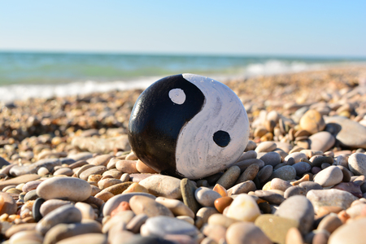
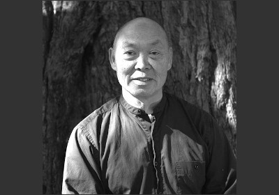

About Us

About Us
Just as the rosebud contains within it the innate form of the perfect flower, so do we all contain within ourselves the innate form of our own perfection. Under the proper conditions of sun, water and nutrients, the bud unfolds to reveal the rose. Likewise the simple conditions of the practice helps us break through a lifetime of old habits and programmed patterns of posture and movement, allowing what is essential in us – physically, mentally and spiritually – to naturally unfold. ~ Sifu Fong Ha (1937-2019)
Daoyin Chuan, was organized in August of 1998, to provide the opportunity and environment to preserve, explore and practice the Integral Chuan Institute program for the internal arts as taught by the late Sifu Fong Ha.
In class, you will learn Meditation (stillness), Qigong (cultivation of Qi), Yiquan (mind-intent development), Taijiquan (moving meditation) and Push Hands (sensitivity development).
Our Practice
Our Practice
These three internal arts create a triad of our practice:
- Qigong
- Baduanjin
- Yijinjing
- Taiji Chih (Ruler)
- Wuji Qigong (Cai Songfang)
- Yiquan
- Wang Xiangzhai (1885-1963)
- Han Xingyuan (1915-1983)
- Fong Ha (1937-2019)
- Taijiquan
- Yang Family Style
- Dong Yingjie (1897-1961)
- Yang Zhenming (1910-1985)
- Fong Ha (1937-2019)
- Tui Shou – Fixed and Moving
- Da Lu – Big Rollback
Ch’i Kung (qigong) practice is expressed in four fundamental disciplines: sitting mediation; Wu Chi Chi Kung (Wuji Qigong), or “standing mediation;” I Ch’uan (yiquan), or “intention practice;” and Tai Chi Ch’uan (taijiquan). We begin with sitting meditation and Wu Chi Ch’i Kung. Ch’i Kung, literally “practice of vital energy,” helps us break through a lifetime of old habits and programmed patterns of behavior and movement, allowing what is essential in us to come forth. This practice cultivates chi (qi), breaks down blocks to the free flow of ch’i throughout the body, and integrates the upper and lower body. I Ch’uan (or “intention practice”) develops our ability to direct ch’i, through focusing the intention. In the broader sense, this practice develops our ability to focus the mind for improved concentration, creativity, and productivity.From stillness, we begin to move. Practice of the 108 moves of the Tai Chi Ch’uan long form further develops ch’i and i, builds strength in movement, stamina, and the ability to relax in strength. At the highest level of practice, the movements of the form become informed or filled by ch’i.
Your Health and Wellness
It’s difficult to be healthy in an unhealthy environment, and unfortunately we live in an unhealthy environment. Through the diligent practice of Ch’i Kung, we cultivate our ch’i, which then begins to flow freely throughout the body, strengthening the weak points and reinforcing the strong points, and providing a defense against the insults of air pollution, toxins in our foods and water, and the stresses of our fast-paced lives.
Self Defense and the Mind
A mind that is free and at peace will recognize immediately either a kindness or an aggression, correctly interpreting and responding appropriately at once to any touch, whether that touch is physical, mental, or spiritual. In this sense our practice is a martial art; our goal is to increase our sensitivity to and awareness of outside forces that affect us physically, mentally, or spiritually. The cultivation of ch’i enhances our alertness, agility, and sensitivity.
~ Sifu Fong Ha (1937-2019)
Sifu Fong Ha

Sifu Fong Ha
Sifu Fong Ha has been practicing Chinese internal arts since his childhood and has studied with many renowned teachers. He began his studies of Yang-style Taijiquan in 1953 with Tung Ying-chieh, and continued with Yang Sau-chung, the eldest son of Yang Cheng-fu. Fong’s exploration then led into the realm of I Ch’uan. One of the few I Ch’uan teachers in the West, Fong Ha is well known for his power, graciousness, and cosmopolitan charm. With humor and insight, he encourages students to be true to themselves, to recognize their inner strengths, develop at their own pace, and actualize their potentials. He directs the Integral Chuan Institute in Berkeley, California and teaches nationally and internationally. He is the author of Yiquan and the Nature of Energy: The fine art of doing nothing and achieving everything (Berkeley: Summerhouse Publications, 1996). He also produced the video, Stillness in Movement: The Practice of T’ai Chi Chuan with Master Fong Ha (Vision Arts Video, 1996)
Stand for Peace ~ Move for Joy
September 7, 1937 - September 26, 2019
Videos of the late Sifu Fong Ha
Students

Sifu Fong Ha Students
Links